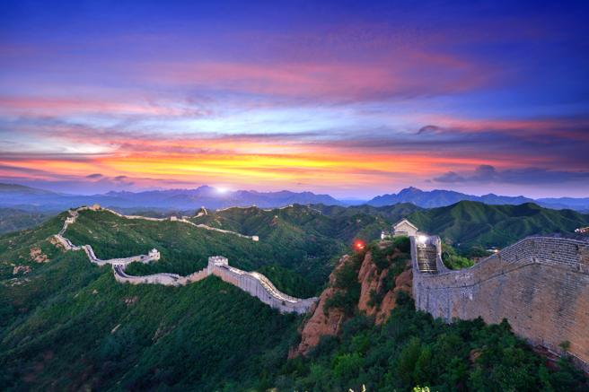

| Muralla China | ||
|---|---|---|
|  | ||
| Localización | ||
| País | China | |
| Localidad | Beijing | |
| Disfruta de la Música | ||
Hablar de China es hablar de un país que tiene el tamaño de un continente, donde la diversidad de paisajes, culturas y lenguas hacen de este país un lugar único en el mundo.
Sus Ciudades Imperiales, con esa arquitectura tan característica y hermosa, los campos de arroz que salpican todo el paisaje, un país en el que el tiempo es lo menos importante cuando se trata de perfección, prueba de ellos son sus cerámicas, un país que conserva una de las Siete Maravillas del Mundo.
La Gran Muralla China – Historia Imperial, intentará dar a conocer más a fondo esta maravilla de la ingeniería y el esfuerzo, así como adentrarnos en su Historia Imperial, tan apasionante.
Las provincias, municipalidades y regiones autónomas por las que pasa la Muralla son (en orden alfabético, debido a que la ramificación de la estructura no permite hacer un seguimiento continuo): Gansu, Hebei, Henan, Hubei, Hunan, Jilin, Liaoning, Mongolia Interior, Ningxia, Pekín, Qinghai, Shaanxi, Shandong, Shanxi, Sichuan, Tianjin y Xinjiang.
Conoce

La Gran muralla China es una antigua fortificación china construida y reconstruida entre el siglo V a. C. y el siglo XVI (Edad Moderna) para proteger la frontera norte del Imperio chino durante las sucesivas dinastías imperiales de los ataques de los nómadas xiongnu de Mongolia y Manchuria.
Contando sus ramificaciones y construcciones secundarias, se calcula que tiene unos 21 200 kilómetros de largo, desde la frontera con Corea, al borde del río Yalu, hasta el desierto de Gobi, a lo largo de un arco que delinea aproximadamente el borde sur de Mongolia Interior, aunque hoy solo se conserva un 30 % de ella. En promedio, mide de 6 a 7 metros de alto y de 4 a 5 metros de ancho.
La muralla fue designada Patrimonio de la Humanidad por la Unesco en 1987.
El 26 de enero de 2007 se dio a conocer que la muralla china fue elegida como una de las ganadoras en la lista de Las Nuevas Siete Maravillas del Mundo Moderno.
La Gran Muralla está hermanada con la muralla romana de Lugo, Galicia (España), también designada Patrimonio de la Humanidad.
En el siglo VIII a. C., en el comienzo del período conocido como primaveras y otoños, China sigue un sistema feudal. El territorio se divide en cientos de feudos o estados dirigidos por príncipes, en teoría todos reunidos bajo los Reyes la Dinastía Zhou. Pero con el tiempo, estos feudos fueron anexados por los príncipes formando grandes principados en el siglo VI a. C.; algunos de ellos fueron Chu y Wu. China estaba rápidamente fragmentada en varios reinos independientes: es el comienzo del período de los Reinos Combatientes.
Arquitectura
Materiales
Los materiales usados son aquellos disponibles en los alrededores de la construcción. Cerca de Pekín se utilizó piedra caliza. En otros sitios se utilizó granito o ladrillo cocido. Básicamente, era una larga tapia de arcilla y arena, cubierta con varias paredes de ladrillo.
Secciones relevantes
Una de las secciones más llamativas de la Gran Muralla Ming es donde remonta muy empinadas laderas. Recorre 11 kilómetros de largo, de 5 a 8 metros de altura y 6 metros en la parte inferior, hasta 5 metros en la parte superior. Tiene 67 torres de vigilancia y está a 980 metros sobre el nivel del mar.
Torre de vigilancia
Se construyeron fuertes a lo largo de la muralla, o directamente integrados en las paredes, con un sistema de señales de humo para impedir un ataque xiongnu. Para lograr la pronta llegada de refuerzos, el ejército hacia uso de la luz, principalmente para la caballería, cada torre tiene escaleras únicas.